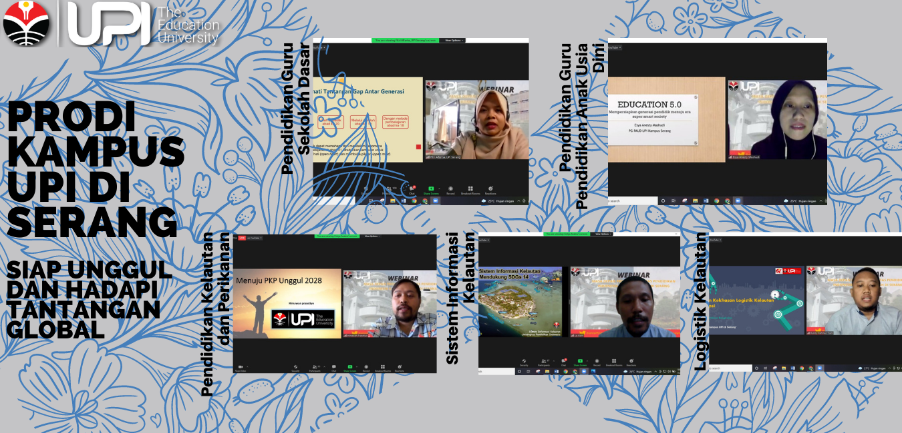

Pada Sabtu (6/11) pagi, Kampus UPI di Serang menggelar kegiatan webinar bertajuk "Prodi Kampus UPI di Serang yang Unggul" secara daring melalui zoom meeting. Kegiatan tersebut menghadirkan pemateri dari perwakilan berbagai prodi yang ada di Kampus UPI di Serang.
Pada sambutan, Direktur Kampus UPI di Serang, Drs. H. Herli Salim, M.Ed., Ph.D. menyampaikan sambutannya. Menurut beliau, kemajuan prodi adalah tanggung jawab bersama sekaligus upaya bersama karena unggul tidaknya sebuah prodi adalah seluruh peran dan dedikasi dari SDM yang terkait di dalamnya.
Berikutnya, Wakil Direktur Kampus UPI di Serang, Dr. Encep Supriatna, M.Pd. menyampaikan hal serupa sekaligus motivasi kepada mahasiswa dan dosen agar senantiasa tetap semangat dan tetap menjaga profesionalitas.
Acara inti diawali dengan pematerian dari Ibu Fitri Alfarisa selaku perwakilan dari Prodi PGSD, dilanjutkan Ibu Esya Anesty Mashudi, M.Pd. dari Prodi PGPAUD, Himawan Prasetyo, M.Si. dari Prodi PKP, La Ode Alam Minsaris, M.Si. dari Prodi SIK, serta Rubby Rahman Tsani, M.M. dari Prodi LK. Kelima pemateri tersebut menyampaikan materi tentang kecapakan abad 21, era 5.0, makna unggul hingga era disrupsi.
Setelah penyampaian materi, dilanjutkan dengan tanya jawab dan foto bersama. Berakhirnya kegiatan webinar tersebut merupakan ajang terakhir dari rangkaian dies natalis UPI ke-76 tahun.
Kampus Upi serang